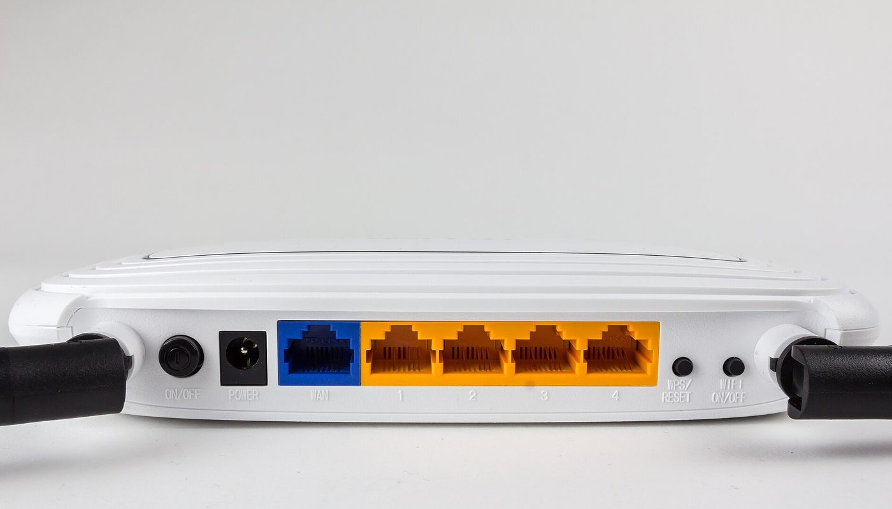
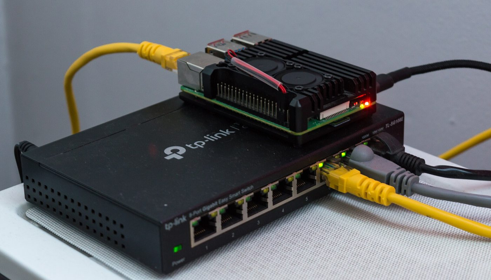

Réseau libre · aucun lien affilié sur cette page · prix relevés le 2 oct. 2026
Routeur VPN de voyage : un appareil chiffre tout, sans abonnement — les prix réels et les pièges avant d'acheter

Au lieu de configurer un VPN sur chaque téléphone et chaque ordinateur, on peut brancher un seul routeur de voyage : tout ce qui s'y connecte — y compris les appareils incapables de faire tourner un VPN — sort par le tunnel. Les modèles du fabricant GL.iNet embarquent OpenWrt, un firmware libre, et sont affichés de 38,98 € à 122,99 € sur la boutique européenne du fabricant (relevé le 2 oct. 2026). Mais quatre choses décident du résultat, et aucune n'est sur la fiche produit.
Aucun lien affilié sur cette page — voir comment ça marche Prix lus le 2 oct. 2026 Firmware libre OpenWrt
En bref
- Trois modèles, trois budgets. Sur la boutique européenne du fabricant, l'Opal (GL-SFT1200) est à 38,98 €, le Beryl AX (GL-MT3000) à 101,00 € et le Slate AX (GL-AXT1800) à 122,99 € — TVA incluse, relevés le 2 oct. 2026. Le Beryl 7 (Wi-Fi 7) monte à 143,99 €.
- Le prix le plus bas du marché français est ailleurs. Un comparateur français affichait le Beryl AX à partir de 84,39 € et le Slate AX à partir de 120,04 € (données du 6 sept. 2026) — sous le prix de la boutique du fabricant. La disponibilité, elle, bouge : le listing Amazon France du Beryl AX était indisponible le 2 oct. 2026.
- Ce que fait le routeur : il établit le tunnel une fois pour tout le réseau qu'il crée (mode répéteur), au lieu de compter sur chaque appareil. Le Wi-Fi public de l'hôtel devient un réseau privé à vous.
- Ce qu'il ne fait pas : il n'apporte pas d'« abonnement VPN gratuit ». Côté maison, il faut une IP publique (la doc du fabricant le rappelle), et sans ça le retour vers votre réseau échoue.
- Ce qui n'est pas chiffré : le coût éventuel d'un fournisseur VPN, un port d'envoi, et la commission nette du programme d'affiliation. Nous ne les inventons pas.
Un routeur de voyage, ce n'est pas un « répéteur » de plus
Un répéteur classique se contente d'étendre un signal Wi-Fi. Un routeur de voyage fait autre chose : il reçoit le réseau d'un hôtel, d'un café ou d'une box, puis crée son propre réseau privé derrière lequel vivent vos appareils. C'est ce qui permet de chiffrer tout d'un coup : vous connectez une seule fois le tunnel, et les téléphones, tablettes et ordinateurs qui passent par ce routeur en profitent sans rien configurer.
La documentation officielle du fabricant décrit précisément ce comportement dans son mode « Repeater » :
Le deuxième intérêt, c'est le retour maison : un routeur qui héberge un serveur VPN permet, depuis l'étranger, d'accéder à son réseau domestique — NAS, disque partagé, ordinateur — comme si on était sur place. C'est le cas d'usage que met en avant le fabricant, et il a une condition qu'on oublie souvent :
Autrement dit : acheter le routeur est la partie facile. Le servir — portail captif de l'hôtel, IP publique côté maison, choix du tunnel — est la partie que personne ne met en avant.
Les prix : ce qui est lu, où, et quand
Les montants ci-dessous viennent de deux endroits, tenus séparés dans le tableau : la boutique européenne du fabricant (prix affichés TTC, relevés le 2 octobre 2026) et un comparateur de prix français (fourchettes de ses marchands, données datées par le comparateur lui-même). Nous ne les mélangeons pas.
Routeurs de voyage (€, boutique européenne du fabricant, relevés le 2 oct. 2026)
Barres proportionnelles aux montants ci-dessus, base à zéro. Tous les prix viennent de la boutique européenne du fabricant (store-eu.gl-inet.com), prix TTC affichés, relevés le 2 octobre 2026. Ils n'incluent pas le port. La boutique applique des promotions tournantes : le montant affiché peut bouger d'un jour à l'autre, c'est pourquoi nous le datons.
| Où | Quoi | Prix relevé le 2 oct. 2026 | Ce que le prix ne comprend pas |
|---|---|---|---|
| Boutique EU du fabricant | Opal (GL-SFT1200) — routeur de voyage Wi-Fi 5 (AC1200), 3 ports gigabit | 38,98 € TTC (en stock) | le tunnel (fournisseur VPN ou serveur maison), le port |
| Boutique EU du fabricant | Beryl AX (GL-MT3000) — Wi-Fi 6, port WAN 2,5 G, USB 3.0 | 101,00 € TTC (en stock) | idem — et le câble/chargeur peut être vendu à part |
| Boutique EU du fabricant | Slate AX (GL-AXT1800) — Wi-Fi 6, USB 3.0 (stockage réseau) | 122,99 € TTC (en stock) | idem |
| Boutique EU du fabricant | Beryl 7 (GL-MT3600BE) — Wi-Fi 7, VPN plus rapide | 143,99 € TTC | idem |
| Comparateur français (idealo.fr) | Beryl AX (GL-MT3000) — offres de plusieurs marchands | de 84,39 € à 139,73 € (données du 6 sept. 2026) | port selon marchand ; prix plus anciens que ceux du fabricant |
| Comparateur français (idealo.fr) | Slate AX (GL-AXT1800) — offres de plusieurs marchands | de 120,04 € à 174,30 € (données du 6 sept. 2026) | port selon marchand ; prix plus anciens que ceux du fabricant |
| Amazon France (listing B0BPSGJN7T) | Beryl AX (GL-MT3000) | indisponible au 2 oct. 2026 | — |
La lecture honnête de ce tableau n'est pas « le fabricant est le moins cher ». Au contraire : sur un comparateur français, le Beryl AX partait de 84,39 €, soit moins que les 101,00 € de la boutique du fabricant — mais ces données-là datent du 6 septembre 2026, pas du 2 octobre, et la disponibilité change. Le prix dépend donc de quand vous regardez. La seule chose stable, c'est l'écart entre les modèles, et c'est ce que le graphique ci-dessus montre : le passage du Wi-Fi 5 (Opal) au Wi-Fi 6 (Beryl AX) fait plus que doubler le prix.
Les quatre pièges que la fiche produit ne dit pas
1. Le Wi-Fi de l'hôtel est souvent derrière un portail captif
C'est le premier mur en voyage. Beaucoup d'hôtels et de cafés ne laissent pas passer le trafic tant qu'on n'a pas ouvert une page de connexion — le portail captif. Un routeur mal préparé se connecte, mais rien ne circule. La documentation du fabricant réserve une section entière à ce cas précis, avec un réglage dédié :
2. Le VPN rapide, c'est WireGuard — pas OpenVPN
Les deux protocoles sont préinstallés, mais ils ne vont pas à la même vitesse. Le fabricant affiche lui-même les plafonds, et l'écart est dans un rapport de 1 à 2 :
3. Rentrer chez soi exige une IP publique — sinon ça échoue
Le scénario « accéder à mon NAS depuis l'étranger » a une condition technique que les vidéos sautent : il faut qu'une adresse joignable depuis Internet existe côté maison. Le fabricant le dit sans détour dans son propre tutoriel de serveur VPN :
Et le même tutoriel prévoit le cas où l'on n'a qu'une IP dynamique (à activer avec le DDNS) ainsi que le cas, fréquent chez certains opérateurs, où l'on est derrière du NAT opérateur (CGNAT) :

4. « OpenWrt » ne veut pas dire « OpenWrt tout neuf »
Le firmware libre est un vrai argument : il dure, il se répare, il se personnalise. Mais la version embarquée n'est pas la dernière d'OpenWrt, et le fabricant le dit. Sur la fiche du Beryl AX : « Runs on OpenWrt 21.02 (Kernel version 5.4) ». Autrement dit, vous achetez un routeur sous OpenWrt 21.02, avec l'interface maison (firmware « 4.x ») par-dessus — et c'est cette interface que vous mettrez à jour pour bénéficier, par exemple, du réglage « portail captif » du piège 1. Ce n'est pas un défaut, c'est une information que les comparatifs omettent.
Trois chemins, selon ce que vous voulez faire
Aucun de ces trois n'est « le bon » : ils ne répondent pas à la même question. Le seul achat regrettable est un routeur choisi sans avoir vérifié la vitesse VPN dont vous avez besoin et la présence d'une IP publique chez vous. Un modèle haut de gamme branché derrière un opérateur en CGNAT ne ramènera pas votre NAS ; un modèle d'entrée de gamme avec un abonnement VPN lent donnera l'impression que « le routeur est mauvais ».
La checklist avant de commander
- Décidez d'abord d'où vient le tunnel. Fournisseur VPN commercial (abonnement, comme sur un téléphone) ou serveur maison (gratuit mais il faut une IP publique) ? Le routeur, seul, n'en fournit aucun.
- Vérifiez si vous avez une IP publique chez vous. Si votre opérateur vous met derrière du CGNAT, le « retour maison » classique échouera — la documentation du fabricant le reconnaît.
- Mettez le firmware à jour avant de partir. Le réglage qui fait passer les portails captifs des hôtels existe depuis la version v4.6 ; sur un firmware d'usine ancien, la connexion peut rester bloquée.
- Préférez WireGuard à OpenVPN quand votre fournisseur propose les deux : le fabricant annonce lui-même un débit environ deux fois supérieur.
- Comptez le débit VPN, pas seulement le Wi-Fi. Un Wi-Fi 6 rapide peut cacher un tunnel lent ; regardez la ligne « WireGuard / OpenVPN » de la fiche, pas la ligne « Wi-Fi ».
- Regardez le prix le jour de l'achat, chez plusieurs vendeurs. Le 6 sept. 2026, un comparateur français plaçait le Beryl AX dès 84,39 € — moins que la boutique du fabricant, mais ces données ont un mois. Nos propres prix sont ceux du 2 octobre 2026.
- Prévoyez le stockage si vous visez le NAS. Le port USB 3.0 n'a d'intérêt qu'avec un disque ; nous n'avons pas chiffré ce disque, donc il n'apparaît dans aucun total ici.
Par où commencer, concrètement
Ces liens sont ceux du fabricant, de sa documentation et du projet libre. Aucun n'est affilié : ils sont là pour que vous vérifiiez les prix et les compatibilités à la source.
- Voir les prix et les modèles : la fiche officielle du Beryl AX (GL-MT3000) et la collection boutique européenne GL.iNet.
- Comprendre le mode répéteur et les portails captifs : documentation officielle « Repeater ».
- Monter son propre serveur VPN : tutoriel officiel « Build your own WireGuard home server ».
- Suivre le firmware libre : le projet OpenWrt (GPL, dépôt openwrt/openwrt suivi chez nous le 2 oct. 2026).
Le réflexe qui évite l'achat inutile : choisir sa source de tunnel, vérifier qu'on a bien une IP publique côté maison, mettre le firmware à jour — et seulement ensuite comparer les prix.
Questions
Un routeur de voyage chiffre-t-il vraiment tous mes appareils ?
Oui, dès qu'ils passent par son Wi-Fi ou son port Ethernet. Le tunnel est établi une fois pour tout le réseau que le routeur crée (mode répéteur/WISP) : la documentation du fabricant parle d'« un sous-réseau » propre et d'un « pare-feu » entre vous et le réseau public. C'est tout l'intérêt face à la configuration appareil par appareil.
Faut-il payer un abonnement après l'achat ?
Le routeur, non : c'est du matériel acheté une fois. Le tunnel, ça dépend de vous : soit un fournisseur VPN commercial (abonnement), soit votre propre serveur chez vous (gratuit, mais il faut une IP publique côté maison). Le routeur ne fournit pas de « VPN gratuit ».
Pourquoi ça ne marche pas au Wi-Fi de l'hôtel ?
Parce que beaucoup d'hôtels filtrent l'accès derrière un portail captif (la page où l'on saisit un code). La documentation recommande le mode « Auto-Enable Login Mode for Public Hotspots », disponible depuis le firmware v4.6. Un routeur non mis à jour peut rester bloqué à cette étape.
Quel modèle choisir ?
Pour sécuriser quelques appareils au moindre coût : l'Opal (38,98 €). Pour un usage courant avec Wi-Fi 6 et un tunnel rapide : le Beryl AX (101,00 €). Pour un tunnel intensif ou du stockage réseau : le Slate AX (122,99 €). Prix relevés le 2 octobre 2026 sur la boutique du fabricant.
Est-ce vraiment OpenWrt ?
Oui, avec une nuance : la fiche du Beryl AX cite « OpenWrt 21.02 (Kernel 5.4) », surmonté de l'interface maison du fabricant (firmware 4.x). Ce n'est pas la dernière version d'OpenWrt, et le fabricant ne le cache pas — c'est simplement écrit sur la fiche, pas dans les comparatifs.
Cette page contient-elle des liens affiliés ?
Non, aucun à ce jour. Le programme du fabricant (jusqu'à 10 % via Awin) est enregistré chez nous comme candidat — aucun compte créé, aucun lien posé. Si cela change, le lien sera étiqueté et cet encadré mis à jour avec la date.
Comment cette page est faite
- Aucun lien affilié ici. Le programme d'affiliation du fabricant (GL.iNet, « jusqu'à 10 % sur les ventes éligibles », via le réseau Awin, avec une alternative Tradedoubler pour l'Europe) a été lu sur la page publique du fabricant le 2 octobre 2026. Il est enregistré chez nous comme candidat : aucun compte créé, aucun lien posé. Si un lien affilié arrive un jour, il sera étiqueté « lien affilié — on est payé si vous souscrivez » à l'endroit où il apparaît, avec
rel="sponsored", et cet encadré sera daté. - Les prix sont ceux que nous avons lus nous-mêmes, le 2 octobre 2026, sur la boutique européenne du fabricant (prix TTC affichés) — et, pour la ligne « comparateur », d'après les données que le comparateur français date lui-même du 6 septembre 2026. Nous datons chaque montant parce qu'ils bougent, et nous séparons les deux sources dans le tableau.
- Ce que nous ne savons pas est écrit comme tel : la commission nette du programme d'affiliation (non mesurable tant qu'aucun compte n'est ouvert), le coût d'un éventuel fournisseur VPN, le prix d'un disque pour le port USB, et le port d'envoi selon le vendeur. Rien de tout cela n'apparaît dans un total.
- Les citations sont celles de la documentation officielle du fabricant, reproduites en anglais avec la traduction française, et datées. Ce ne sont ni des témoignages de clients, ni des avis que nous aurions suscités.
- Nous ne fabriquons aucun avis, aucun témoignage et aucune statistique. Les chiffres de débit VPN sont ceux annoncés par le fabricant, ce qui est précisé à chaque fois.
- Corrections : si un prix a changé ou si nous nous sommes trompés, écrivez-nous, nous corrigeons et nous datons la correction.
Sources
- Page officielle du programme d'affiliation GL.iNet (« Earn up to 10% on eligible sales », réseau Awin — identifiant de marchand observé dans le code d'intégration Awin, plus une option Tradedoubler pour l'Europe) — lue le 2 octobre 2026.
- Boutique européenne du fabricant (store-eu.gl-inet.com), prix TTC affichés : Opal (GL-SFT1200) 38,98 € ; Beryl AX (GL-MT3000) 101,00 € ; Slate AX (GL-AXT1800) 122,99 € ; Beryl 7 (GL-MT3600BE) 143,99 € ; Flint (GL-AX1800) 102,99 € — relevés le 2 octobre 2026.
- Fiche produit officielle Beryl AX (GL-MT3000) : « OpenWrt 21.02 (Kernel version 5.4) », « plus de 5 000 greffons », débits VPN annoncés « WireGuard Max. 300Mbps · OpenVPN Max. 150Mbps » — lue le 2 octobre 2026.
- Docs officielles GL.iNet, page « Repeater » (mode WISP = sous-réseau propre + pare-feu ; section « For Public Hotspot » et fonction « Auto-Enable Login Mode for Public Hotspots » depuis la v4.6) — lue le 2 octobre 2026.
- Docs officielles GL.iNet, page « WireGuard Client » (client WireGuard pour joindre un réseau domestique disposant d'une IP publique ; « élimine le coût et les tracas d'un abonnement continu à des services VPN commerciaux ») — lue le 2 octobre 2026.
- Docs officielles GL.iNet, tutoriel « Build your own WireGuard home server with two GL.iNet routers » (IP publique obligatoire côté WAN ; DDNS pour une IP dynamique ; « si vous êtes derrière du CGNAT », solution SD-WAN AstroWarp) — lu le 2 octobre 2026.
- Comparateur de prix français idealo.fr, pages produit GL.iNet GL-MT3000 Beryl AX et GL-AXT1800 Slate AX (fourchettes des marchands : 84,39–139,73 € et 120,04–174,30 € ; le comparateur date ses données du 6 septembre 2026) — lues le 2 octobre 2026.
- Dépôt GitHub openwrt/openwrt (projet OpenWrt, licence libre) — 28 603 étoiles, dernier envoi le 2 octobre 2026 (consulté via l'API GitHub le 2 octobre 2026).
- Photos : routeur Wi-Fi (vue arrière) — Wikipedian and others, CC BY-SA 4.0 ; Raspberry Pi sur commutateur réseau — RAIL P, CC0. Toutes deux via Wikimedia Commons.
Avis clients
Avis sur ce guide, publiés après vérification. Chaque avis négatif reçoit une réponse publique — c'est comme ça qu'on s'améliore.
Les premiers avis seront publiés ici dès que de vrais lecteurs en enverront.